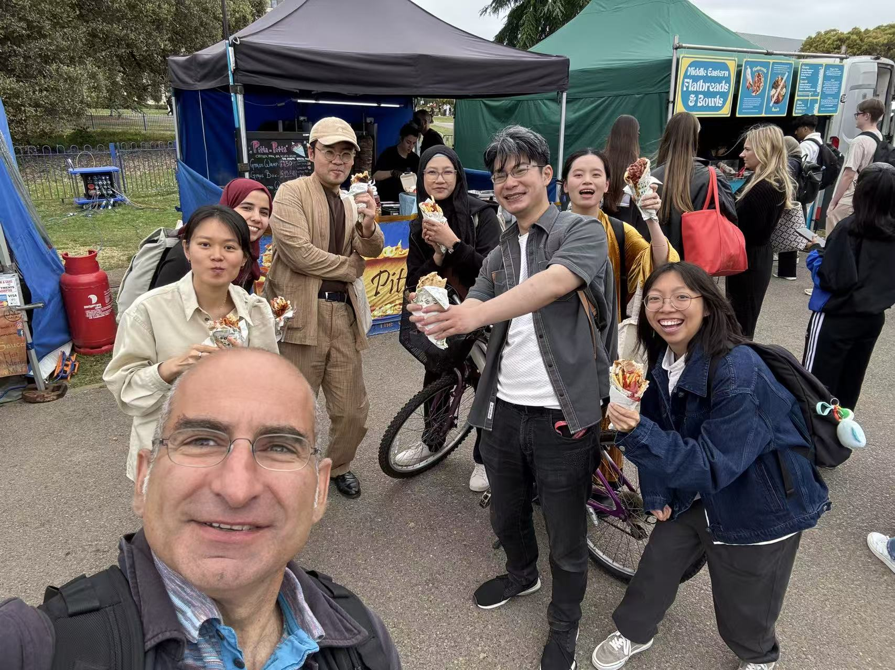
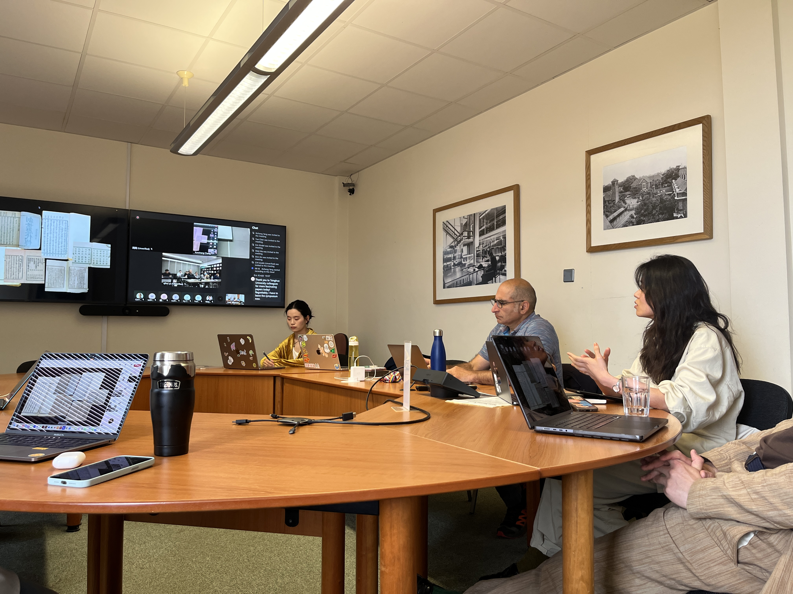
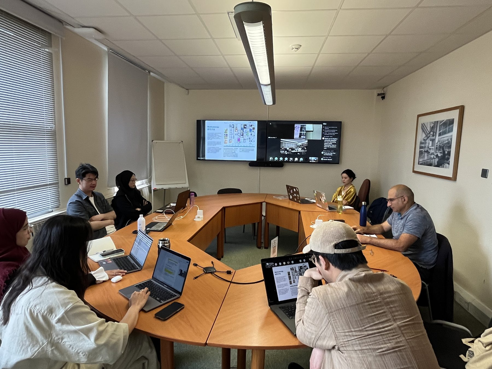
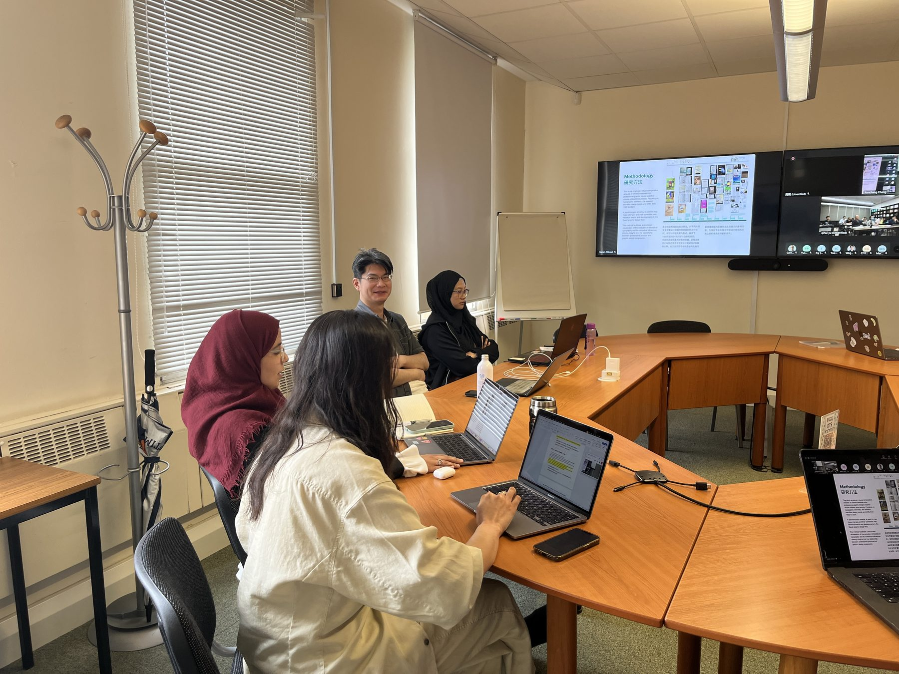

Academic Forum
Graduate and Doctoral Research: Character Form, Type, and Typography
The Development of Hanyu Pinyin and Its Application Challenges in Type Design





Academic Forum
The Development of Hanyu Pinyin and Its Application Challenges in Type Design



